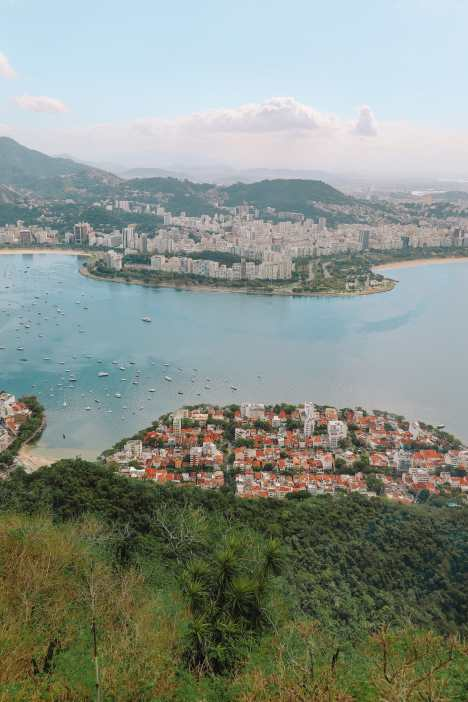

Rio de Janeiro, Brazil

Rio de Janeiro is known for being a very tropical, scenic and lively city.
Filled with beachy landscapes, lots of wildlife, intricate monuments, etc., Rio is an exciting travel destination to vacation to and experience.
Activities
- Visit Rio’s beaches
Some of the most popular beaches worldwide,
like the Copacabana, Barra de Tijuca, etc. are situated in Rio, which tourists are able to enjoy.
- Go for a walk around the city
Rio de Janeiro has lots of vibrant activities and architecture located around the city for people to experience and learn about.
- Take a trip up Sugarloaf Mountain on Rio’s cable cart ride
Of about 400 meters tall, the peninsula peak stands next to the Atlantic Ocean, allowing visitors to view the beautiful natural sites below.
Restaurants
Average Temperatures (°C)
| Winter |
Spring |
Summer |
Autumn |
| June to August |
September to November |
December to March |
April to May |
| 21 |
23 |
26 |
22 |
Return to the top
Return to home